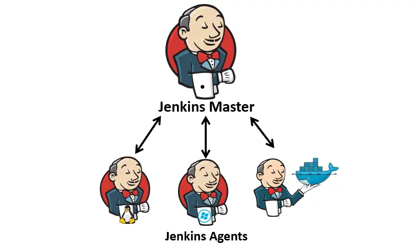
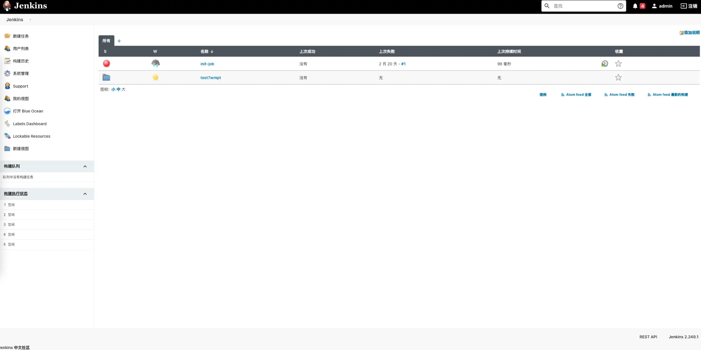
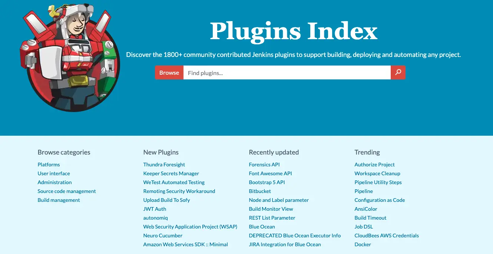
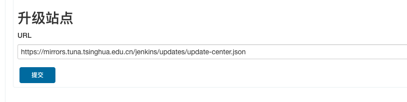
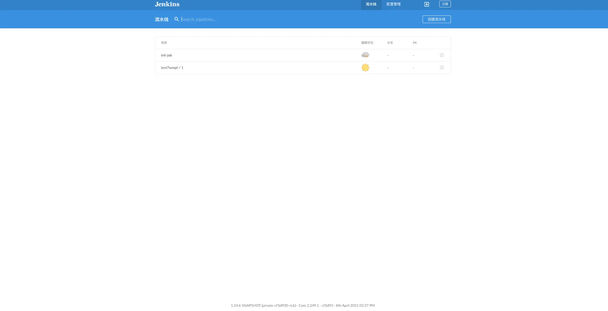
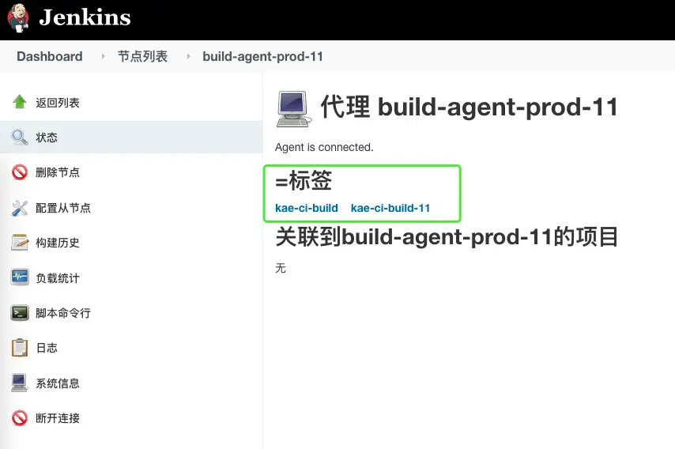

工具平台 - Jenkins
Jenkins 介绍
- Jenkins 的前身是 Hudson，采用 Java 编写的持续集成开源工具。
- Hudson 由 Sun 公司在 2004年启动，第一个版本于2005年在java.net发布。
- 2007 年开始 Hudson 在构建领域占据领先地位
- 2010 年，因为 Oracle 对 Sun 的收购带来了 Hudson 的所有权问题。主要的项目贡献者和Oracle之间，尽管达成了很多协议，但有个关键问题就是商标名称 "Hudson"。
- 甲骨文在 2010 年 12 月声明拥有该名称并申请商标的权利。因此，2011 年 1 月 11 日，有人要求投票将项目名称从 "Hudson" 改为 "Jenkins" 。
2011 年 1 月 29 日，该建议得到社区投票的批准，创建了 Jenkins 项目。
Jenkins 应用场景
- 集成svn/git客户端实现源代码下载检出
- 集成maven/ant/gradle/npm等构建工具实现源码编译打包单元测试
- 集成sonarqube对源代码进行质量检查（坏味道、复杂度、新增bug等）
- 集成SaltStack/Ansible实现自动化部署发布
- 集成Jmeter/Soar/Kubernetes/.....
- 可以自定义插件或者脚本通过jenkins传参运行
- 可以说Jenkins比较灵活插件资源丰富，日常运维工作都可以自动
Jenkins 架构

- Master 节点作为协调者，负责与执行节点通信并分派任务
- Agent 节点任务执行者
Jenkins 的安装
方式一：原生安装包
apt-get install jenkins
方式二：直接运行 jenkins.war
方式三：Docker 或者 Kubernetes 安装
docker run -p 8080:8080 --name myjenkins -v jenkins_home:/var/jenkins_home -v jenkins_downloads:/var/jenkins_home/downloads jenkins/jenkins:lts
Jenkins Web 页面
Jenkins 插件的安装

Jenkins 插件的安装
方式一：官网下载
https://plugins.jenkins.io/ 使用 jenkins-plugin-cli 命令安装

方式二：管理页面安装
进入 Jenkins 后台操作，Manage Jenkins ( 系统管理 ) -> Manage Plugins (插件管理) ->Advanced(高级) ->修改Update Site(升级站点)：https://mirrors.tuna.tsinghua.edu.cn/jenkins/updates/update-center.json

Jenkins Blue Ocean 界面

Master 与 Agent 交互方式
- SSH
Master 能通过 SSH 直连 Agent，Agent 上启动了 SSHD 服务
JNLP Agent 能访问 Master，Agent 需要 JVM 环境运行，Master 需要放开 50000（默认值）端口用于 Agent 通信
WebSocket
Agent 能访问 Master，Agent 需要 JVM 环境运行
Jenkins 通过标签选择
- 标签是什么
当 agent 数量变多时，如何知道哪些 agent 支持JDK 8、哪些 agent 支持Node.js环境呢？
- 标签能做什么
就是给 agent 节点设置一个过滤的别名，在后续执行 job 的时候，可根据标签名字进行执行节点的分配。

两种流水线使用
- 自由风格软件项目（FreeStyle Project）
将整个过程分为了源码管理、构建触发器、构建环境、构建、构建后操作等阶段，通过页面进行操作。
- 流水线项目（Pipeline Project）
通过 Groovy 语言编写 Jenkinsfile 定义流水线，更加灵活。